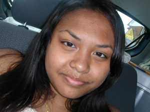

My first year at Artemis was great and I wanted so bad to be in it because I was very acquainted with HTML and Photoshop and some Javascript. Being that as it may, I was accepted and was excited to learn more and meet new people. I first started designing in 6th grade but I never got so high-tech until 8th grade so I appreciated all the lessons being taught to me, boring or not. This program is able to bring out the worst and best of people but it made me realize more about myself, (ex. I realize that I am not a quitter unless I let myself quit.) So I got much out of my experience at Artemis in July 2003.
I was excited to be accepted back as a student assistant for the 2004 program at Artemis. I knew that Danielle (another returning student who is wonderfully great!) and I would have to take on a lot of challenges that not only have to do with just ourselves but others as well. There were always many doubts for me when it came to committing myself to another summer of webdesign but I figured if going to school in the summertime makes me wake up earlier when I get back to high school, why not? Haha, I'm just kidding. The timing of this program is exceptionally well and the program itself is great.
Last year, I learned the stuff that the Artemis girls are learning this year. (Introduction to Windows, Hardware, HTML, Photoshop, etc.) I like the fact that I am able to teach some lessons too with the coodinators this year. It makes me feel like I'm all grown up. This year, Danielle and I will be learning how to use Linux. We are also learning JavaScript, Flash, Advanced HTML, Advanced Photoshop, and Python. I think we are both excited to learn Python which is a computer programming software that makes games. At times, Linux can frustrate me but other times it makes me feel like I'm the smartest person in the world! Who doesn't like that feeling?
The difference between last year and this year is the responsibilities I have to take charge of when I'm working on Linux. Last year, I was able to call on anyone for help because I was a first student. I use to despise Basic LOGO and I kind of do still. But its great to know that when I see the LOGO programmer I can kind of remember some commands. I loved doing Photoshop and HTML last year. These two were my best assets when I came to the Artemis program. I loved the fact also that I was able to get more acquainted with Photoshop and HTML. The best moment of my 2003 Artemis year is working with Robots. My group's robot was named Sir-Dance-A-Lot and he was quite a dancer grooving to Sir Mix-A-Lot's - I Like Big Butts. Oh, I can still remember that day! The most fun I ever had in Artemis was when we would go on field trips. Even if it was boring, I'd still have fun because I was with the Artemis girls.
This year will be great because not only do I get to learn, but I get to teach people who want to learn! I also love the fact that I get to share the same experience with Danielle Cohen and the four new coordinators, Michelle, Sara, Krista, and Adrienne. Peace!
Here are some things that the Artemis girls can understand what subject can help them do what!